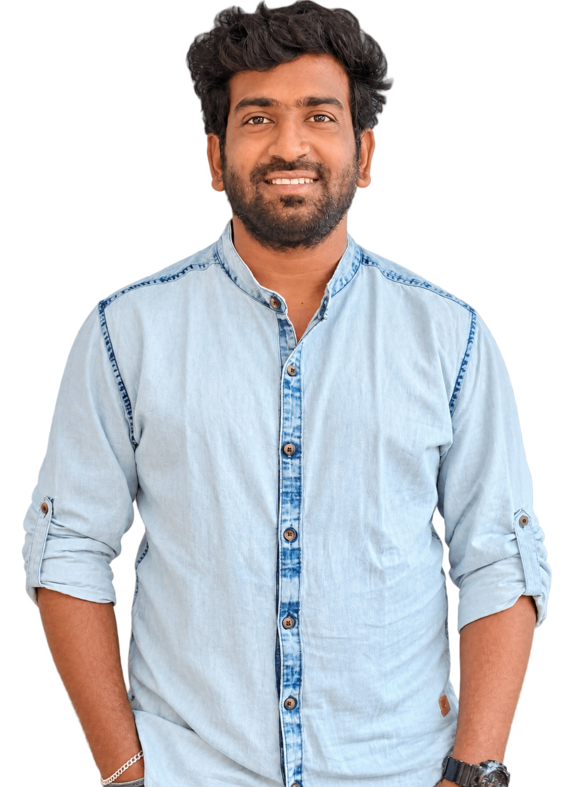

Instructional Design & Online Courses
Structuring content, defining learning objectives and shaping information into meaningful online learning experiences.
Hello, I'm Srinivas T. I create engaging digital learning experiences, interactive online courses and clear training content that help people learn with confidence.
Thoughtful instructional design meets creative digital development.
I bring learning content to life through structured storytelling, thoughtful visuals and meaningful interactions.

I believe effective learning should be clear, relevant and engaging. I start by understanding the learning need, then shape information into a structured experience that supports real understanding.
I enjoy combining instructional design, visual communication and interactive development to make complex topics easier to learn.
Online course development, interactive learning, training content, storyboarding, knowledge checks and learner-friendly digital materials.
With experience in instructional design and e-learning development, I use Articulate Storyline 360, Articulate Rise, Microsoft PowerPoint and Adobe Captivate to create engaging online courses, interactive learning activities and learner assessments.
Structuring content, defining learning objectives and shaping information into meaningful online learning experiences.
Developing interactive digital courses using authoring tools, multimedia elements and learner-focused interactions.
I use a versatile set of authoring, creative and AI tools to plan, design and develop dynamic learning experiences.
Tools for building interactive learning modules, responsive online courses and learner assessments.
Tools for creating presentations, graphics, videos and learning assets.
AI tools that support ideation, drafting, content development and workflow efficiency.
Working with Cornerstone LMS and web technologies to support digital learning delivery and customization.
I draw on instructional design models, learning frameworks and visual communication principles to create learning experiences that support understanding and performance.
Using structured and iterative approaches to analyse needs, design solutions, develop content, implement learning and improve outcomes.
Applying learning principles that help capture attention, build understanding, encourage participation and connect new knowledge with experience.
Aligning learning objectives, learning activities and assessments with the intended levels of knowledge and skill.
Using contrast, repetition, alignment and proximity to create clear, consistent and easy-to-follow learning materials.
Practical learning-design services to help turn your content and ideas into effective digital learning experiences.
Creating engaging digital learning experiences to meet diverse learning objectives effectively.
Implementing innovative strategies to transform concepts into effective learning experiences.
Enhancing existing online content to ensure relevance and alignment with learning goals.
Partnering with Subject Matter Experts to develop high-quality digital learning content.
Creating learner assessments, quizzes and knowledge checks to measure understanding and reinforce key learning points.
Every project follows a thoughtful process to keep the learning solution aligned with its audience, objectives and intended outcomes.
Every project begins with a thorough needs assessment to understand your objectives, audience, existing content and constraints.
Tailoring content for impact: I structure the learning experience, plan interactions and align each element with your goals and audience.
Transforming concepts into reality: I turn ideas into effective learning experiences by integrating content, visuals and technology.
Refining for excellence: I review, incorporate feedback and improve the solution so it remains relevant and effective.
Whether you need support with instructional design, online course development or training content, let's talk about how I can help.
I'm open to freelance collaborations and opportunities to create meaningful learning experiences.
Email: srinivas.t206@gmail.com ↗